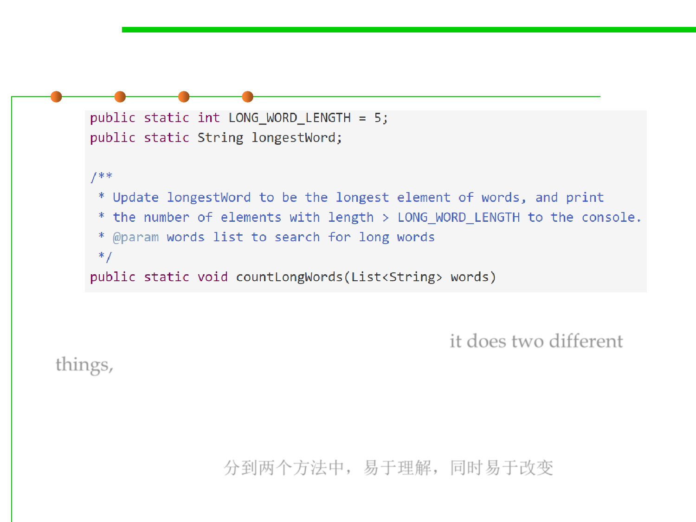

3.2 Designing Specification
The specification should be coherent(内聚的)
▪ In addition to terrible use of global variables and printing instead of
returning , the specification is not coherent — it does two different
things, counting words and finding the longest word.
▪ How to improve:
– Separating those two responsibilities into two different methods will make
them simpler (easy to understand) and more useful in other contexts
(ready for change). 分到两个方法中，易于理解，同时易于改变